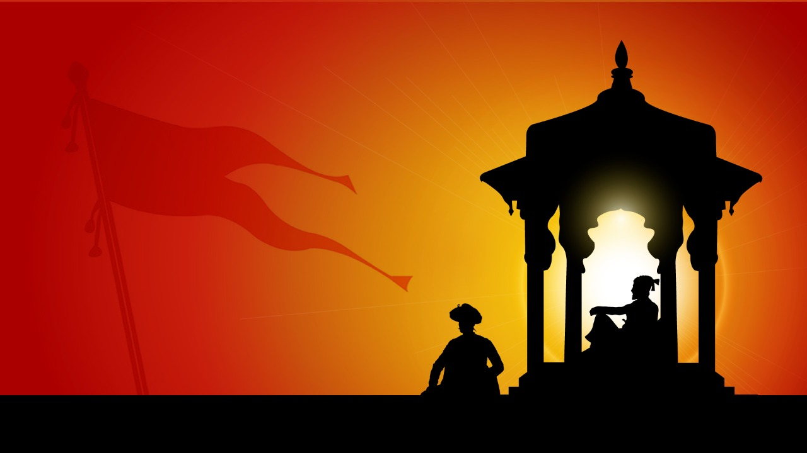

Shivaji Maharaj's Contributions
Welcome to the Shivaji Maharaj Tribute
Explore the key contributions of Shivaji Maharaj, a great leader in Indian history, through the following pages.

Chattrapati Shivaji Maharaj was the founder of the Maratha Empire in western India. He is considered to be one of the greatest warriors of his time and even today, stories of his exploits are narrated as a part of the folklore. With his valor and great administrative skills, Shivaji carved out an enclave from the declining Adilshahi sultanate of Bijapur. It eventually became the genesis of the Maratha Empire.